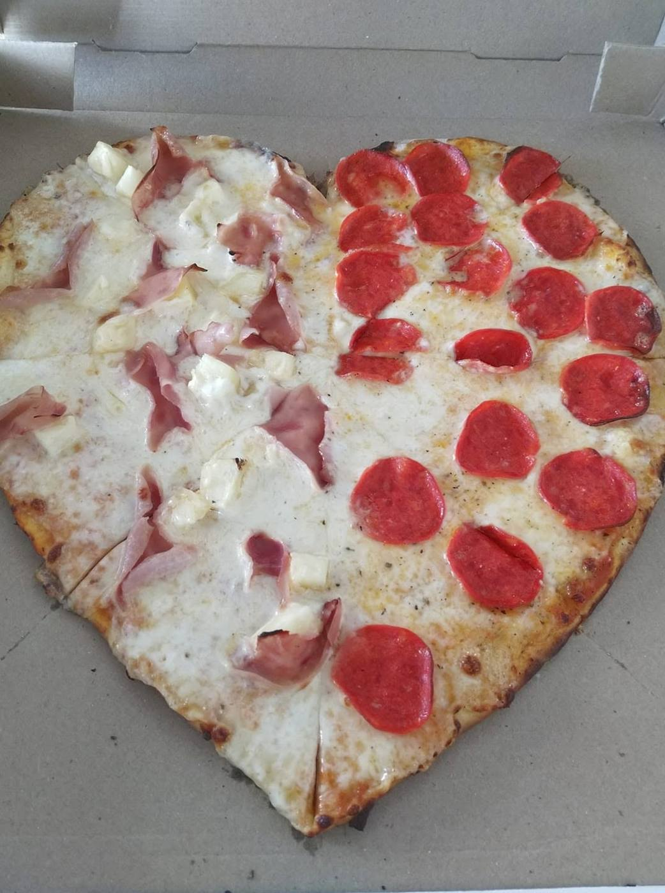
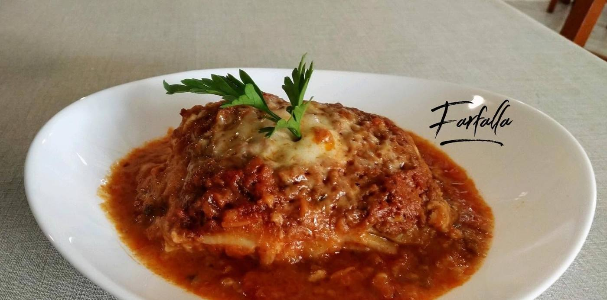
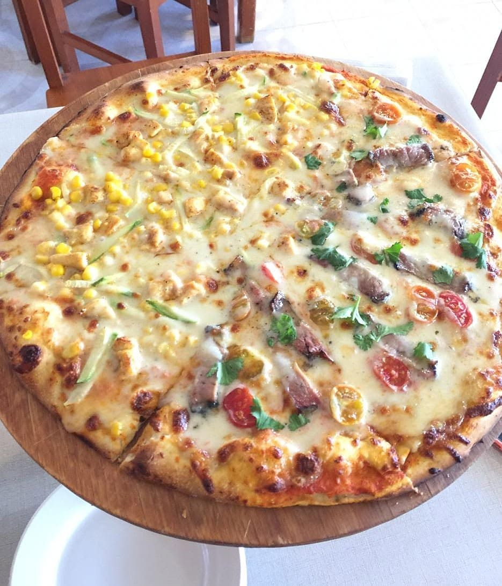
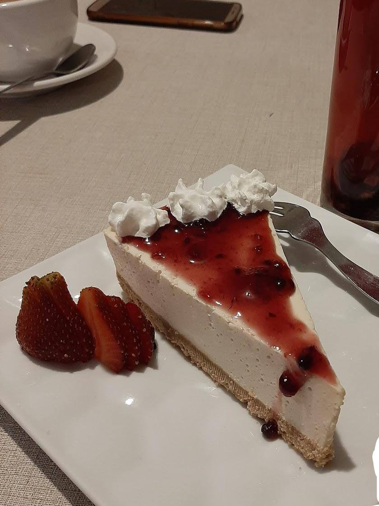
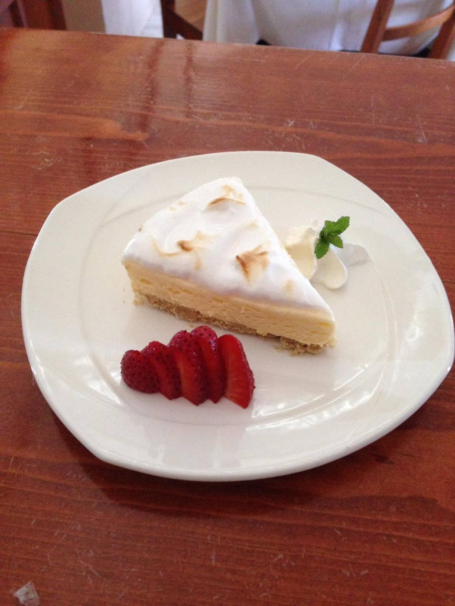
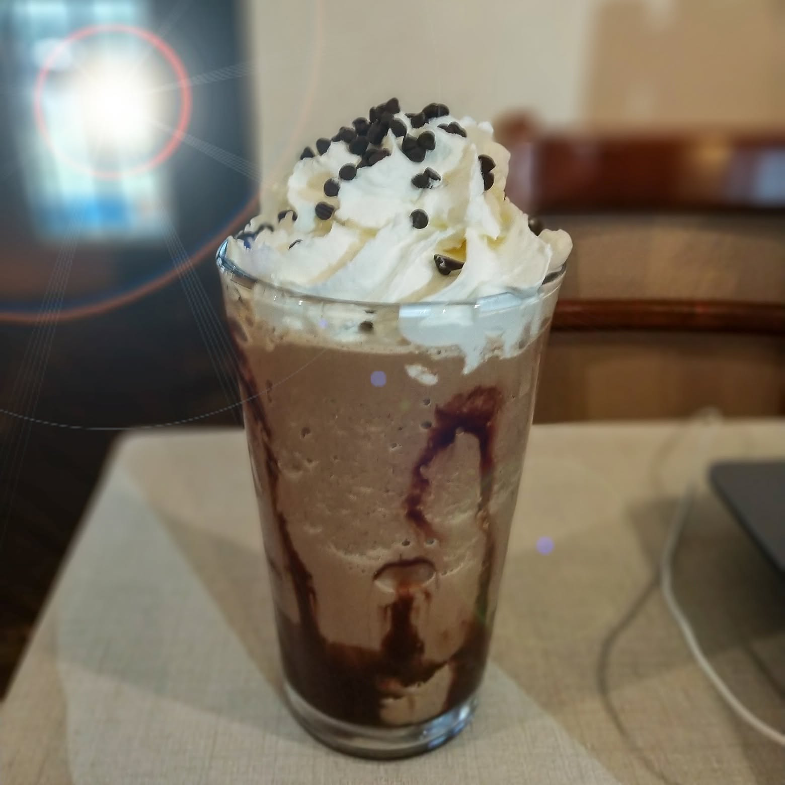
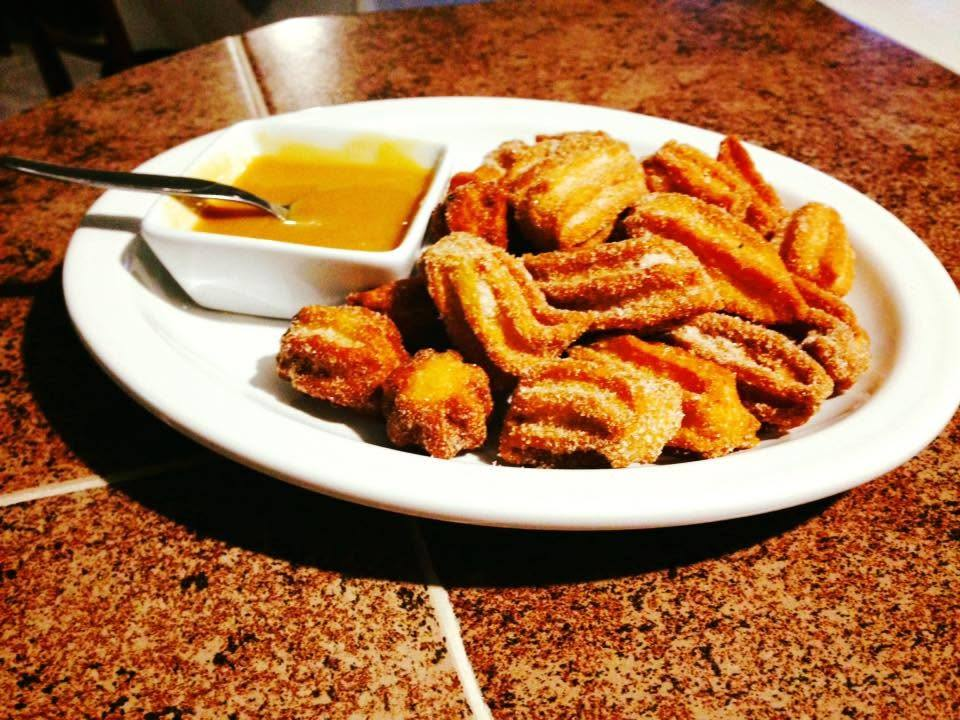

Margherita PepperoniPepperoniLasaña
PepperoniPepperoniLasaña
Pepperoni
Lasaña
Pescado monje
MargheritaPepperoniLasañaCheesecake Pay de limón
Pay de limón

CapuchinoPay de limón
Frappé
Churros
CheesecakeCapuchino